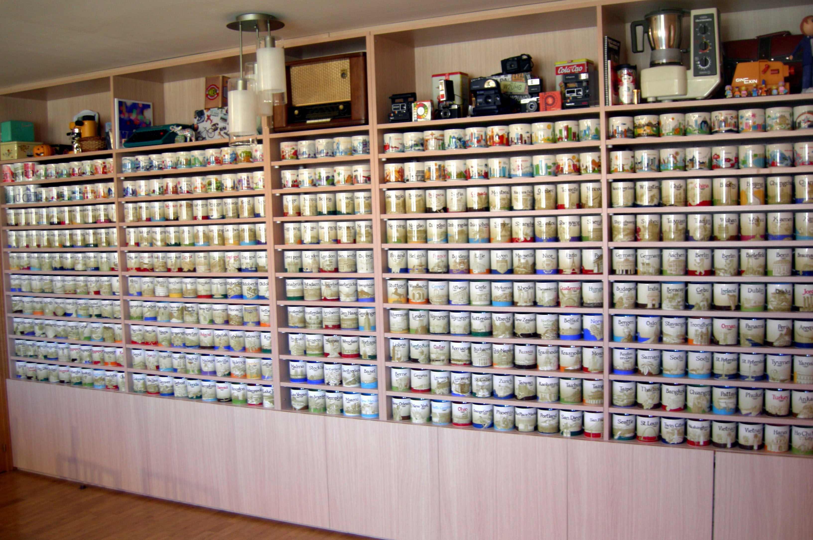

Bienvenidos al ejercicio Global del cursoEl texto superior está con tipo de letra Palatino Linotype, y es un encabezado. De hecho, hay que hacer constar que el texto por defecto del sitio web es Palatino Linotype El texto está embedido en una tabla (Mediante la etiqueta <table>), y dentro se han insertado varias filas y/o celdas. Para que se considere, todo este contenido está ocupando un total del 65% del ancho de la página. Los porcentajes superior, inferior, izquierdo y derecho que se ven al márgen son, respectivamente, 5%, 0%, 30% y 5%. El fondo está fijo. Para ello, lo mejor es poner la siguiente regla en CSS: background-attachment:fixed. Seguro que lo consigues...El texto del párrafo por defecto, está justificado. Los títulos (Etiquetas hx) están todos centrados. El texto del cuerpo de la página web es, en cualquier caso, Palatino Linotype. El padding de los encabezados es 5% (Izquierda y derecha), el de los párrafos es 10% (Izquierda y derecha) y el de las listas es del 15% (Izquierda y derecha) ...Y otras muchas cosas que es importante considerar...Hay que tener en cuenta las siguientes restricciones:
Respecto al fondo de la página también hay que tener en cuenta las siguientes consideraciones:
|
Y si te gusta el café...esta imagen seguro que es sugerente.World Wide Web Consortium (W3C) es una comunidad internacional que desarrolla estándares que aseguran el crecimiento de la Web a largo plazo.Pulsa sobre este enlace e irás a su página principal |